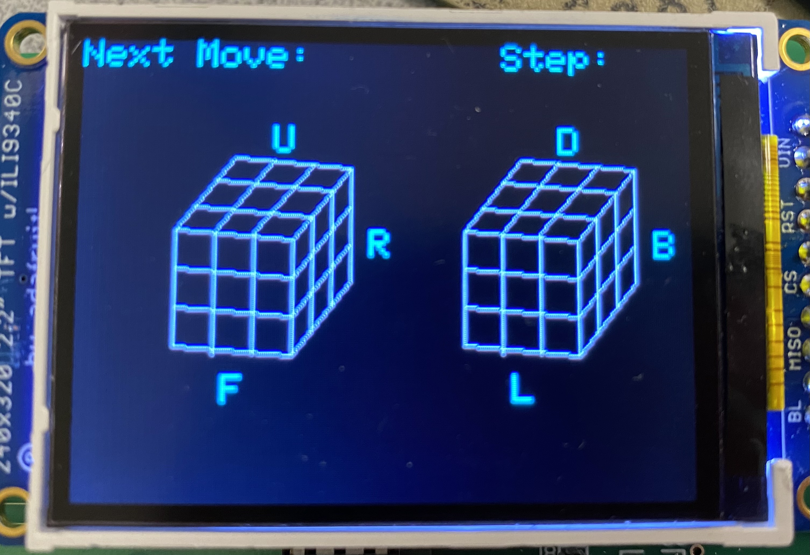
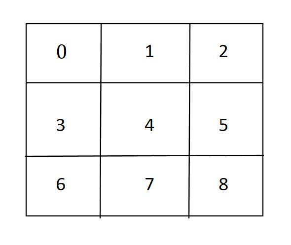
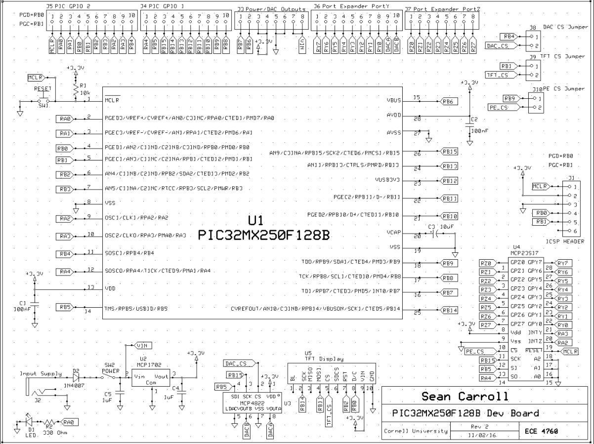

Almost everybody has used a rubik's cube puzzle before, whether they are picking up the cube for the first time, looking up the solution algorithms, or playing around with a different iteration. Many different kinds of rubik's puzzles have come out over the years, such as the Rubik's Cube Pyramid and the 2-by-2 cube Rubik's Cube. The most common of these puzzles is the original 3-by-3 Rubik's Cube. For our final project, we made a Rubik's Cube solver that can guide people how to solve their Rubik's Cube after they have been scrambled.
In order to operate Rubot, a user must take a solved cube first and scramble it with a set of moves. The user then sends the move set to the PIC32 using a python GUI for the cube to be solved. The PIC32 then proceeds to solve the cube and generates a solution move set. Finally, the solution moveset is displayed on a TFT screen that is attached to the PIC32. The solution moveset displays one move at a time and the user can go to the next or previous move in the moveset by using buttons on the GUI.
Our project was mostly implemented with software. Visuals on the TFT display show the user the state of the solving algorithm and what moves to execute.
The user interface was designed with ease of use in mind for the user. With only four buttons
and one input field, this goal was achieved. To use the GUI, a user types in a defined set of moves
that would be explained in a user manual. These moves are: F, R, U, B, L, D, F’, R’, U’, B’, L’, D’,
F2, R2, U2, B2, L2, D2. This nomenclature is very common among the rubik’s cube community. A user
scrambles their cube and writes down each move they’ve chosen to make and inputs this move into the
“Move Input” input field. The user clicks solve and then the solving moves are flashed to the TFT
screen of the PIC32. A user can then step forwards and backwards through the solving moves using
the “TFT Controls” buttons.
The Python interface also must parse the user input in the background before sending it to the PIC
for processing. When the user clicks “Solve”, the GUI takes the user’s input and turns each move into
an element in an array. Then, each move in the array is converted into an 8-bit binary representation.
Finally, the array is encoded and a header, the number of moves, and a terminating character is added.
This encoded “package” is then sent to the PIC32 via the UART serial connection.
The next, “>”, and previous, “<”, move buttons work in the same way as the “Solve” button except only
the header and terminating characters are needed because button differentiation is done with the header characters.
As they are going through the solution steps, the user is shown what number step they are on, as well as the next move they should do. In addition to this, we also wanted to give them a reference for what their cube should look like after each move. The graphic is made up of two images, each showing three sides of the cube. The locations of the faces on the images are based on how the cube appears when it is looked at from the orientation of the images.
The representation of each face includes two opposite edges and nine unsigned short color values named color0 through color8. These values determine what color a given square on a face is drawn. The color of the square in the 0 position is color0 and the color of the square in the 8 position is color8. The following image shows how the positions of squares on a face are determined.
In order to color a face, the coordinates of the face and the square position are used to determine where the color should go. Parallel lines of the given color are drawn across the square to give the appearance of a full square of color.
This group approves of this report for inclusion on the course website.
This group approves the video for inclusion on the course youtube channel.
Board Schematic:
We did not use any additional parts except what was provided to us.
Total: $40.25